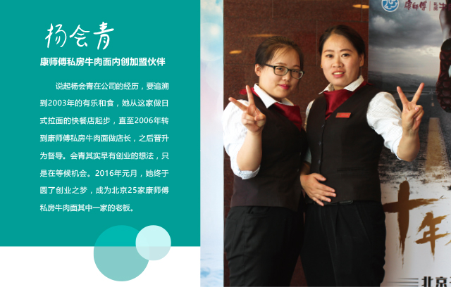
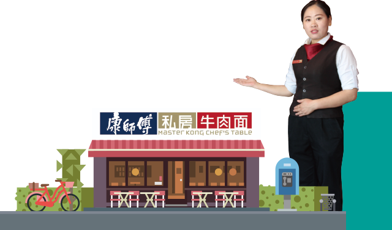

“选择餐饮行业是误入，但后来时间越长越觉得做餐饮是很有使命感的事。董事长常说餐饮是老实人的买卖，我们做的每一份产品都能双手奉上给自己的父母孩子吃。”会青也经常跟她的家人朋友们这样说，“康师傅私房牛肉面做出来的每一碗面，您都可以放心吃！”坚持努力了这么多年，会青很感激公司对她的栽培，每个阶段都能提供给她平台和机会，让她在职业上的不同阶段都能尝试新鲜的事物，最终圆了她的老板梦，可以为自己拼搏一番。